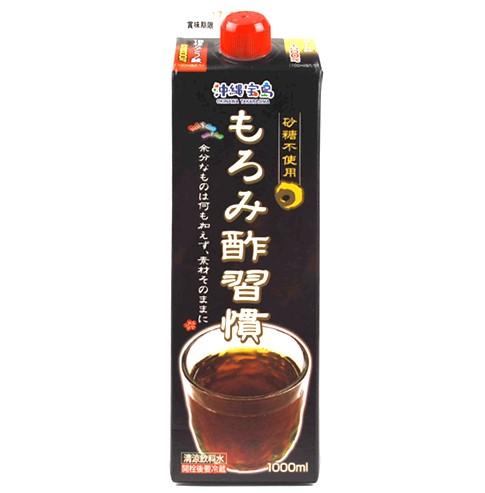

もろみ酢習慣
クエン酸とアミノ酸を豊富に含んだお酢の最高峰「もろみ酢」
もろみ酢とは、沖縄の特産品である｢泡盛｣の製造過程でできる、クエン酸やアミノ酸を豊富に含む黒麹菌の醗酵が生み出す清涼飲料水です。
お酢と聞くと、酸っぱいイメージがありますが、もろみ酢は黒酢や食酢にみられる酢酸が主成分ではなく、クエン酸とアミノ酸が主成分のためストレートでもお飲みいただけます。
「もろみ」は昔は、家畜の餌や肥料として使われてきましたが家畜や作物の発育・成長に良好に作用することから、昔の沖縄の人たちは、もろみに含まれる成分を有効活用してきました。
クエン酸が疲労に作用することは近年知られていますが、そのような知識を持たない当時黒麹菌が大量のクエン酸を生成して醗酵することを知っている泡盛製造現場の職人たちは、さっぱりした酸味のもろみを食べて夏の盛りなどに精をつけたといいます。
- 商品概要
- アレルギー
- 栄養成分
| JANコード | 4582112263222 |
|---|---|
| 原材料 | 米、こうじ |
| 内容量 | 1000ml |
| 賞味期間 | 製造から365日 |
| 保存方法 | 直射日光、高温多湿を避け、常温にて保存 |
| 本製品には枠内を塗りつぶしたアレルギー物質が含まれています。 | |||
| 小麦 | 卵 | 乳 | 大豆 |
| 鶏肉 | 豚肉 | ゼラチン | |
| 栄養成分(100ml)あたり | |
| エネルギー | 38kcal |
|---|---|
| 炭水化物 | 6.7g |
| たんぱく質 | 3.0g |
| ナトリウム | 3.7mg |
| クエン酸 | 31mg |
| 総アミノ酸 | アルギニン269mg リジン123mg ヒスチジン69mg フェニルアラニン88mg チロシン119mg ロイシン137mg イソロイシン95mg メチオニン30mg バリン130mg アラニン262mg グリシン165mg プロリン150mg グルタミン酸403mg セリン123mg スレオニン103mg アスパラギン酸247mg トリプトファン18mg シスチン54mg |